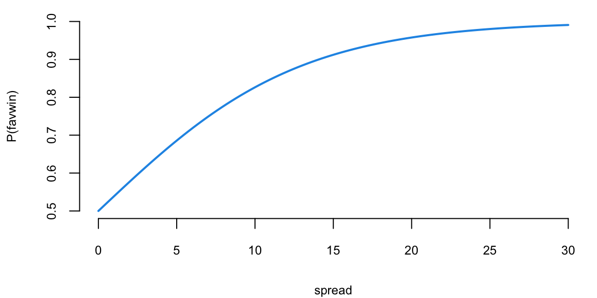
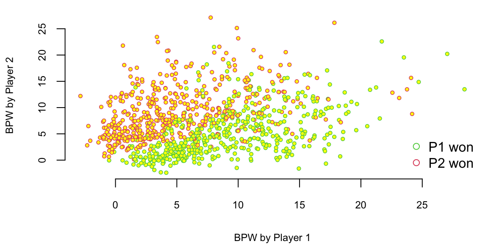
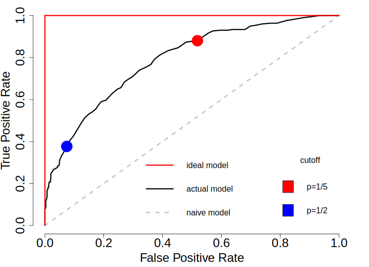
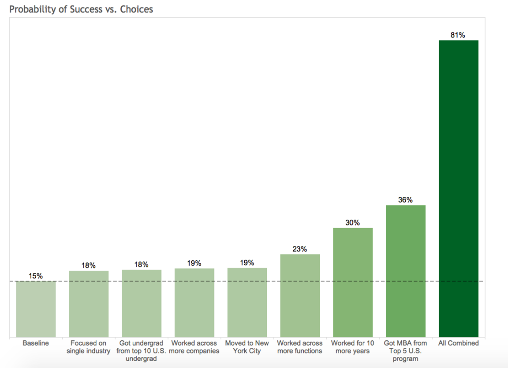

The cross-entropy loss function is used for for categorical variables. Given the observed data set \(\{(x_i,y_i)\}_{i=1}^n\), where each \(y_i\) is either 0 or 1, the goal is to predict a probability that the next observation will be 1. We denote this value by \(f(x_i,\beta) = P(y_{n+1} = 1\mid x_{n+1})\). We can use the cross-entropy loss function to measure the difference between \(f(x_i,\beta)\) and actual outcomes. Note, we need to make sure that \(f(x_i,\beta) \in (0,1)\), e.g. it outputs a number between zero and one for this loss function to work. \[
\mini_{\beta} -\sum_{i=1}^n y_i \log \left ( f(x_i,\beta) \right ) + (1-y_i) \log \left ( 1-f(x_i,\beta) \right ).
\] The cross-entropy estimator is the value of \(\beta\) that minimizes the cross-entropy loss function.
In the unconditional case, when we do not observe any inputs \(x\), the cross-entropy estimator is again, the sample mean. If we take the derivative of the above expression with respect to \(\beta\) and set it to zero, we get \[
\frac{d}{d\beta} -\sum_{i=1}^n y_i \log \left ( \beta \right ) + (1-y_i) \log \left ( 1-\beta \right ) = -\sum_{i=1}^n \frac{y_i}{\beta} - \frac{1-y_i}{1-\beta} = 0
\] which gives us the solution \[
\hat{\beta} = \frac{1}{n}\sum_{i=1}^n y_i.
\] which is the sample mean.
Unlike the least squares estimator, there is no analytical solution to the problem of minimizing cross-entropy. However, there are efficient numerical optimization algorithms that can be used to find the optimal solution. As we will show later, the cross-entropy estimator is equivalent to the maximum likelihood estimator, assuming that \(y\) is the Bernoulli random variable.
In the case when we have more than two classes \(y \in \{1,\ldots,K\}\), we simply build \(K\) models \(f_1(x_i,\beta),\ldots, f(x_K,\beta)\), one for each class and then use the softmax function to convert the output of each model into a number between zero and one. The softmax function is defined as follows \[
\mathrm{softmax}\left(f_j(x,\beta)\right) = \frac{\exp(f_j(x,\beta))}{\sum_{i=1}^K \exp(f_i(x,\beta))}.
\] The softmax function is a generalization of the sigmoid function to the case of more than two classes. It is often used as the activation function in the output layer of neural networks for multi-class classification problems. It converts the output of each model into a probability distribution over the classes, making it suitable for multi-class classification with probabilistic outputs.
In summary, choosing the right loss function for your predictive rule depends on several factors, including type of prediction task: regression vs classification and importance of sensitivity to outliers.
For that, we need to specify the loss function that will measure the mismatch between an observed and a predicted values. The loss function is a measure of how well the model fits the data and is used to estimate the parameters of the model. The goal is to find the values of the parameters that minimize the loss function. A most popular choice for the loss function is the squared error loss function. \[
L(\beta; ~D) = \sum_{i=1}^n (y_i - f(x_i))^2 \rightarrow \mathrm{minimize}_{\beta}
\]
Breiman’s Two Cultures
Statistical prediction problems are of great practical and theoretical interest. The deep learning predictor has a number of advantages over traditional predictors, including that
input data can include all data of possible relevance to the prediction problem at hand
nonlinearities and complex interactions among input data are accounted for seamlessly
overfitting is more easily avoided than traditional high dimensional procedures
there exists fast, scale computational frameworks (TensorFlow)
Let \(x\) be a high dimensional input containing a large set of potentially relevant data. Let \(y\) represent an output (or response) to a task which we aim to solve based on the information in \(x\). Brieman [2000] summaries the difference between statistical and machine learning philosophy as follows.
“There are two cultures in the use of statistical modeling to reach conclusions from data. One assumes that the data are generated by a given stochastic data model. The other uses algorithmic models and treats the data mechanism as unknown.”
“The statistical community has been committed to the almost exclusive use of data models. This commitment has led to irrelevant theory, questionable conclusions, and has kept statisticians from working on a large range of interesting current problems.”
“Algorithmic modeling, both in theory and practice, has developed rapidly in fields outside statistics. It can be used both on large complex data sets and as a more accurate and informative alternative to data modeling on smaller data sets. If our goal as a field is to use data to solve problems, then we need to move away from exclusive dependence on data models and adopt a more diverse set of tools.”
14.1 Logistic Regression
When the value \(y\) we are trying to predict is categorical (or qualitative) we have a classification problem. For a binary output we predict the probability its going to happen \[
p ( Y=1 | X = x ),
\] where \(X = (x_1,\ldots,x_p)\) is our usual list of predictors.
Suppose that we have a binary response, \(y\) taking the value \(0\) or \(1\)
Win or lose
Sick or healthy
Buy or not buy
Pay or default
The goal is to predict the probability that \(y\) equals \(1\). You can then do and categorize a new data point. Assessing credit risk and default data is a typical problem. - \(y\): whether or not a customer defaults on their credit card (No or Yes). - \(x\): The average balance that customer has remaining on their credit card after making their monthly payment, plus as many other features you think might predict \(Y\).
A linear model is a powerful tool to find relations among different variables \[
y = \beta^Tx + \epsilon.
\] It works assuming that \(y\) variable is contentious and ranges in \((-\infty,+\infty)\). Another assumption is that conditional distribution of \(y\) is normal \(p(y\mid \beta^Tx) \sim N(\beta^Tx, \sigma^2)\)
What do we do when assumptions about conditional normal distributions do not hold. For example \(y\) can be a binary variable with values 0 and 1. For example \(y\) is
Outcome of an election
Result of spam filter
Decision variable about loan approval
We model response \(\{0,1\}\), using a continuous variable \(y \in [0,1]\) which is interpreted as the probability that response equals to 1. \[
p( y= 1 | x_1, \ldots , x_p ) = F \left ( \beta_1 x_1 + \ldots + b_p x_p \right )
\] where \(f\) is increasing and \(0< f(x)<1\).
It seems logical to find a transformation \(F\) so that \(F(\beta^Tx + \epsilon) \in [0,1]\). Then we can predict using \(F(\beta^Tx)\) and intercepting interpret the result as a probability, i.e if \(F(\beta^Tx) = z\) then we interpret it as \(p(y=1) = z\). Such function \(F\) is called a link function.
Do we know a function that maps any real number to a number in \([0,1]\) interval? What about commutative distribution function \(F(x) = p(Z \le x)\)? If we choose CDF \(\Phi(x)\) for \(N(0,1)\) then we have \[\begin{align*}
\hat y = p(y=1) &= \Phi(\beta^Tx) \\
\Phi^{-1}(\hat y) = & \beta^Tx + \epsilon
\end{align*}\] This is a linear model for \(\Phi^{-1}(\hat y)\), but not for \(y\)! You can thing of this as a change of units for variable \(y\). In this specific case, when we use normal CDF, the resulting model is called probit, it stands for probability unit. The resulting link function is \(\Phi^{-1}\) and now \(\Phi^{-1}(Y)\) follows a normal distribution! This term was coined in the 1930’s by biologists studying the dosage-cure rate link. We can fit a probit model using glm function in R.
set.seed(92) # Kuzyx =seq(-3,3,length.out =100)y =pnorm(x+rnorm(100))>0.5probitModel =glm(y~x, family=binomial(link="probit"))mc =as.double(coef(probitModel))# we want to predict outcome for x = -1xnew =-1(yt = mc[1] + mc[2]*xnew)
A couple of observations: (i) this fits the data much better than the linear estimation, and (i) it always lies between 0 and 1. Instead of thinking of \(y\) as a probability and transforming right hand side of the linear model we can think of transforming \(y\) so that transformed variable lies in \((-\infty,+\infty)\). We can use odds ratio, that we talked about before \[
\dfrac{y}{1-y}
\]
Odds ration lies in the interval \((0,+\infty)\). Almost what we need, but not exactly. Can we do another transform that maps \((0,+\infty)\) to \((-\infty,+\infty)\)? \[
\log\left(\dfrac{y}{1-y}\right)
\] will do the trick! This function is called a logit function and it is This function is called a logit function and it is the inverse of the sigmoidal "logistic" function or logistic transform. The is linear in \[
\log \left ( \frac{ p \left ( y=1|x \right ) }{ 1 - p \left ( Y=1|x \right ) } \right ) = \beta_0 + \beta_1 x_1 + \ldots + x_p.
\] These model are easy to fit in R:
glm( y ~ x1 + x2, family="binomial")
is for indicates \(y=0\) or \(1\)
has a bunch of other options.
Outside of specific field, i.e. behavioral economics, the logistic function is much more popular of a choice compared to probit model. Besides that fact that is more intuitive to work with logit transform, it also has several nice properties when we deal with multiple classes (more then 2). Also, it is computationally easier then working with normal distributions. The density function of the logit is very similar to the probit one.
We can easily derive an inverse of the logit function to get back the original \(y\)\[
\log\left(\dfrac{y}{1-y}\right) = \beta^Tx;~~ y=\dfrac{e^{\beta^Tx}}{1+e^{\beta^Tx}}
\]
Does the Vegas point spread predict whether the favorite wins or not? Turquoise = Favorites does win, Purple = Favorite does not win. In R: the output gives us
Call:
glm(formula = favwin ~ spread - 1, family = binomial)
Coefficients:
Estimate Std. Error z value Pr(>|z|)
spread 0.1560 0.0138 11.3 <2e-16 ***
---
Signif. codes: 0 '***' 0.001 '**' 0.01 '*' 0.05 '.' 0.1 ' ' 1
(Dispersion parameter for binomial family taken to be 1)
Null deviance: 766.62 on 553 degrees of freedom
Residual deviance: 527.97 on 552 degrees of freedom
AIC: 530
Number of Fisher Scoring iterations: 5
s =seq(0,30,length=100)fit =exp(s*nbareg$coef[1])/(1+exp(s*nbareg$coef[1]))plot(s, fit, typ="l", col=4, lwd=2, ylim=c(0.5,1), xlab="spread", ylab="P(favwin)")

The \(\beta\) measures how our log-odds change! \(\beta = 0.156\)
Let’s do the NBA Point Spread Prediction. “Plug-in” the values for the new game into our logistic regression \[
{ P \left ( \mathrm{ favwin} \mid \mathrm{ spread} \right ) = \frac{ e^{ \beta x } }{ 1 + e^{\beta x} } }
\] Check that when \(\beta =0\) we have \(p= \frac{1}{2}\).
Given our new values spread\(=8\) or spread\(=4\), the win probabilities are \(77\)% and \(65\)%, respectively. Clearly, the bigger spread means a higher chance of winning.
Example 14.2 (Logistic Regression for Tennis Classification) Data science plays a major role in tennis, you can learn about recent AI tools developed by IBM from this This Yahoo Article.
We will analyze the Tennis Major Tournament Match Statistics Data Set from the UCI ML repository. The data set has one per each game from four major Tennis tournaments in 2013 (Australia Open, French Open, US Open, and Wimbledon).
Let’s load the data and familiarize ourselves with it
We have data for 943 matches and for each match we have 44 columns, including names of the players, their gender, surface type and match statistics. Let’s look at the number of break points won by each player. We will plot BPW (break points won) by each player on the scatter plot and will colorize each dot according to the outcome
n =dim(d)[1]plot(d$BPW.1+rnorm(n),d$BPW.2+rnorm(n), pch=21, col=d$Result+2, cex=0.6, bg="yellow", lwd=0.8,xlab="BPW by Player 1", ylab="BPW by Player 2")legend("bottomright", c("P1 won", "P2 won"), col=c(3,2), pch=21, bg="yellow", bty='n')

We can clearly see that number of the break points won is a clear predictor of the match outcome. Which is obvious and follows from the rules, to win a match, a player must win break points. Now, we want to understand the impact of a winning a break point on the overall match outcome. We do it by building a logistic regression model
which(is.na(d$BPW.1)) # there is one row with NA value for the BPW.1 value and we remove it
171
d = d[-171,]; n =dim(d)[1]m =glm(Result ~ BPW.1+ BPW.2-1, data=d, family ="binomial" )summary(m)
Call:
glm(formula = Result ~ BPW.1 + BPW.2 - 1, family = "binomial",
data = d)
Coefficients:
Estimate Std. Error z value Pr(>|z|)
BPW.1 0.4019 0.0264 15.2 <2e-16 ***
BPW.2 -0.4183 0.0277 -15.1 <2e-16 ***
---
Signif. codes: 0 '***' 0.001 '**' 0.01 '*' 0.05 '.' 0.1 ' ' 1
(Dispersion parameter for binomial family taken to be 1)
Null deviance: 1305.89 on 942 degrees of freedom
Residual deviance: 768.49 on 940 degrees of freedom
AIC: 772.5
Number of Fisher Scoring iterations: 5
R output does not tell us how accurate our model is but we can quickly check it by using the table function. We will use \(0.5\) as a threshold for our classification.
table(d$Result, as.integer(m$fitted.values>0.5))
0 1
0 416 61
1 65 400
Thus, our model got (416+416)/942 = 0.88% of the predictions correctly!
Essentially, the logistic regression is trying to draw a line that separates the red observations from the green one. In out case, we have two predictors \(x_1\) = BPW.1 and \(x_2\) = BPW.2 and our model is \[
\log\left(\dfrac{p}{1-p}\right) = \beta_1x_1 + \beta_2 x_2,
\] where \(p\) is the probability of player 1 winning the match. We want to find the line along which the probability is 1/2, meaning that \(p/(1-p) = 1\) and log-odds \(\log(p/(1-p)) = 0\), thus the equation for the line is \(\beta_1x_1 + \beta_2 x_2 = 0\) or \[
x_2 = \dfrac{-\beta_1}{\beta_2}x_1
\]
There are a couple of observations. First, effect of a break point on the game outcome is significant and symmetric, effect of loosing break point is the same as the effect of winning one. We also can interpret the effect of winning a break point in the following way. We will keep BPW.2 = 0 and will calculate what happens to the probability of winning when BPW.1 changes from 0 to 1. The odds ration for player 1 winning when BPW.1 = 0 is exp(0) which is 1, meaning that the probability that P1 wins is 1/2. Now when BPW.1 = 1, the odds ratio is 1.5
exp(0.4019)
1.5
We can calculate probability of winning from the regression equation \[
\dfrac{p}{1-p} = 1.5,~~~p = 1.5(1-p),~~~2.5p = 1.5,~~~p = 0.6
\] Thus probability of winning goes from 50% to 60%, we can use predict function to get this result
Tennis is arguably the sport in which mean and women are treated equally. Both man and women matches are shown during the prime-time on TV, they both have the same prize money. However, one of the comments you hear often is that Women’s matches are “less predictable”, meaning that an upset (when the favorite looses) is more likely to happen in a women’s match compared to man Matches. We can test thus statement by looking at the residuals. The large the residual the less accurate our prediction was.
Let’s do a formal T-test on the residuals foe men’s and women’s matches
men = d %>%filter(res<2, gender=="M") %>%pull(res)women = d %>%filter(res<2, gender=="W") %>%pull(res)t.test(men, women, alternative ="two.sided")
Welch Two Sample t-test
data: men and women
t = -5, df = 811, p-value = 3e-06
alternative hypothesis: true difference in means is not equal to 0
95 percent confidence interval:
-0.105 -0.043
sample estimates:
mean of x mean of y
1.2 1.3
Looks like the crowd wisdom that Women’s matches are less predictable is correct.
Example 14.3 (Credit Card Default) We have 10,000 observations
We can use accuracy rate: \[
\text{accuracy} = \dfrac{\text{\# of Correct answers}}{n}
\] or its dual, error rate \[
\text{error rate} = 1 - \text{accuracy}.
\] You remember, we haw two types of errors. We can use confusion matrix to quantify those
Predicted: YES
Predicted: NO
Actual: YES
TPR
FNR
Actual: NO
FPR
TNR
True positive rate (TPR) is the sensitivity and false positive rate (FPR) is the specificity of our predictive model
Example: Evolute the previous model Accuracy = 0.96
Predicted: YES
Predicted: NO
Actual: YES
TPR=0.6
FNR=0.4
Actual: NO
FPR=0.03
TNR=0.97
I used \(p=0.2\) as a cut-off. What if I use smaller or larger \(p\), e.g. \(p=0\)?
ROC Curve Shows what happens for different cut-off values
First, we define a function, that calculates the ROC
roc <-function(p,y, ...){ y <-factor(y) n <-length(p) p <-as.vector(p) Q <- p >matrix(rep(seq(0,1,length=100),n),ncol=100,byrow=TRUE) specificity <-colMeans(!Q[y==levels(y)[1],]) sensitivity <-colMeans(Q[y==levels(y)[2],])plot(1-specificity, sensitivity, type="l", ...)abline(a=0,b=1,lty=2,col=8)}
The coefficients \(\beta = (\beta_0, \beta_1)\) can be estimated using maximum likelihood method we discussed when talked about linear regression.
The model we derived above, gives us probability of \(y\), given \(x\)\[
p(y\mid x) = \dfrac{e^{\beta^Tx}}{1+e^{\beta^Tx}}
\]
Now the problem is as follows \[
\underset{\beta}{maximize} \prod_{i:y_i = 1}p(x_i)\prod_{j:y_j = 0}(1-p(x_j)).
\]
Maximum likelihood is a very general approach that is used to fit many of the non-linear models.
14.2.2 Choosing \(p\) and Evaluating Quality of Classifier
In logistic regression we use the logistic function to calculate a probability of \(y = 1\)\[
p(y=1\mid x) = \dfrac{e^{\beta^Tx}}{1+e^{\beta^Tx}}.
\] Then, to predict a label we use a rule if \(y<p\), predict 0, and predict 1 otherwise. Now we answer the question of how to choose the cut-off value \(p\). We show it through an example.
Example 14.4 (Load Default) Assume a bank is using a logistic regression model to predict probability of a loan default and would issue a loan if \(a = p(y=1) < p\). Here \(p\) is the level of risk bank is willing to take. If bank chooses \(p=1\) and gives loans to everyone it is likely to loose a lot of money from defaulted accounts. If it chooses \(p = 0\) it will not issue loan to anyone and wont make any money. In order to choose an appropriate \(p\), we need to know what are the risks. Assume, bank makes $0.25 on every $1 borrowed in interest in fees and loose the entire amount of $1 if account defaults. This leads to the following pay-off matrix
Pay-off matrix for a loan
payer
defaulter
loan
-0.25
1
no load
0
0
Then, given \(a = p(y=1)\), the expected profit is profit = \(0.25(1-a) - a\) to maintain a positive profit we need to choose \[
0.25(1-a) - a >0 \iff -1.25a > -0.25 \iff a < 0.25 /1.25= 0.2
\] Thus, by choosing cutoff to be 0.2 or less, we guarantee to make profit on our loans.
To evaluate a binary classification predictor, we will use confusion matrix. It is shows numbers of correct predictions by the model (true positives and true negatives) and incorrect ones (false positive and false negatives). Say, we have a model that predicts weather person has a disease or not and we evaluate this model using 200 samples (\(n=200\)) with 60 being labeled as 0 (NO) and 140 labeled as 1 (YES) and model predicted correctly 130 YES labeled observations and 50 NOs.
Predicted: YES
Predicted: NO
Actual: YES
TP = 130
FN = 10
Actual: NO
FP = 10
TN = 50
Sometimes, it is convenient to used rates rather than absolute counts and we compute
Predicted: YES
Predicted: NO
Actual: YES
TPR = 130/140
FNR = 10/140
Actual: NO
FPR = 10/60
TNR = 50/60
True positive rate (TPR) is nothing but the sensitivity and false positive rate (FPR) is the specificity of our predictive model. Accuracy, which is the percent of correct predictions is another metric can be used to evaluate a classifier. \[
\mbox{Accuracy} = \dfrac{\mbox{TP + TN}}{n}.
\] The error rate is opposite to accuracy \[
\mbox{Error rate} = 1- \mbox{Accuracy}
\]
For a logistic regression, the confusion matrix will be different for different choices of the cut-off values \(p\). If we would like to understand the performance of the model for different values of \(p\) we can split an ROC curve, which plots pairs of TPR and FPR for different values of \(p\). Saw we take a sequence of 11 values \(p \in {0, 0.1, 0.2,\ldots,1}\) and we evaluate TPR and FPR for those 10 values and plot those pairs on a 2D plot then we will get the ROC curve. A few facts about the ROC curve:
If we set \(p=0\), then any model will always predict NO, this leads to FPR=0 and TPR=0
If we set \(p=1\) and model always predicts YES, then we get FPR = 1 and TPR = 1
If we have an “ideal" model then for any \(0<p<1\) we will have FPR = 0 and TPR = 1.
A naive model that uses coin flip to classify will have FPR = 1/2 and TPR = 1/2
An ROC curve for an model will lie in-between the ideal curve and naive curve. If your model is worse then naive, it is not a good model. And your model cannot be better than an ideal model.
Example 14.5 (Default) Let’s consider an example. We want to predict default given attributes of the loan applicant. We have 1000 observations of 9 variables
Then we plot ROC curve (FPR vs TPR) for different values of \(p\) and compare the curve with the naive

ROC curve for logistic regression model for repearting defualts
14.3 Multinomial logistic regression
Softmax regression (or multinomial logistic regression) is a generalization of logistic regression to the case where we want to handle multiple classes. In logistic regression we assumed that the labels were binary: \(y_i \in \{0,1\}\) . We used such a classifier to distinguish between two kinds of hand-written digits. Softmax regression allows us to handle \(y_i \in \{1,\ldots ,K\}\) where \(K\) is the number of classes. Our model took the form: \[
f(x\mid \beta)=\dfrac{1}{1+\exp(-\beta^Tx)}~,
\] and the model parameters \(\beta\) were trained to minimize the loss function (negative log-likelihood) \[
J(\beta) = -\left[ \sum_{i=1}^m y_i \log f(x\mid \beta) + (1-y_i) \log (1-f(x\mid \beta)) \right]
\]
Given a test input \(x\), we want our model to estimate the probability that \(p(y=k|x)\) for each value of \(k=1,\ldots ,K\) Thus, our model will output a \(K\)-dimensional vector (whose elements sum to 1) giving us our K estimated probabilities. Concretely, our model \(f(x\mid \beta)\) takes the form: \[
\begin{aligned}
f(x\mid \beta) =
\begin{bmatrix}
p(y = 1 | x; \beta) \\
p(y = 2 | x; \beta) \\
\vdots \\
p(y = K | x; \beta)
\end{bmatrix}
=
\frac{1}{ \sum_{j=1}^{K}{\exp(\beta_k^T x) }}
\begin{bmatrix}
\exp(\beta_1^{T} x ) \\
\exp(\beta_2^{T} x ) \\
\vdots \\
\exp(\beta_k^T x ) \\
\end{bmatrix}\end{aligned}
\]
Here \(\beta_i \in R^n, i=1,\ldots,K\) are the parameters of our model. Notice that the term \(1/ \sum_{j=1}^{K}{\exp(\beta_k^T x) }\) normalizes the distribution, so that it sums to one.
For convenience, we will also write \(\beta\) to denote all the parameters of our model. When you implement softmax regression, it is usually convenient to represent \(\beta\) as an \(n\)-by-\(K\) matrix obtained by concatenating \(\beta_1,\beta_2,\ldots ,\beta_K\) into columns, so that \[
\beta = \left[\begin{array}{cccc}| & | & | & | \\
\beta_1 & \beta_2 & \cdots & \beta_K \\
| & | & | & |
\end{array}\right].
\]
We now describe the cost function that we’ll use for softmax regression. In the equation below, \(1\) is the indicator function, so that \(1\)(a true statement)=1, and \(1\)(a false statement)=0. For example, 1(2+3 > 4) evaluates to 1; whereas 1(1+1 == 5) evaluates to 0. Our cost function will be: \[
\begin{aligned}
J(\beta) = - \left[ \sum_{i=1}^{m} \sum_{k=1}^{K} 1\left\{y_i = k\right\} \log \frac{\exp(\beta_k^T x_i)}{\sum_{j=1}^K \exp(\beta_k^T x_i)}\right]
\end{aligned}
\]
Notice that this generalizes the logistic regression cost function, which could also have been written: \[
\begin{aligned}
J(\beta) &= - \left[ \sum_{i=1}^m (1-y_i) \log (1-f(x\mid \beta)) + y_i \log f(x\mid \beta) \right] \\
&= - \left[ \sum_{i=1}^{m} \sum_{k=0}^{1} 1\left\{y_i = k\right\} \log p(y_i = k | x_i ; \beta) \right]\end{aligned}
\] The softmax cost function is similar, except that we now sum over the \(K\) different possible values of the class label. Note also that in softmax regression, we have that \[
p(y_i = k | x_i ; \beta) = \frac{\exp(\beta_k^T x_i)}{\sum_{j=1}^K \exp(\beta_k^T x_i) }.
\]
Softmax regression has an unusual property that it has a redundant set of parameters. To explain what this means, suppose we take each of our parameter vectors \(\beta_j\), and subtract some fixed vector \(\psi\). Our model now estimates the class label probabilities as \[
\begin{aligned}
p(y_i = k | x_i ; \beta)
&= \frac{\exp((\beta_k-\psi)^T x_i)}{\sum_{j=1}^K \exp( (\beta_j-\psi)^T x_i)} \\
&= \frac{\exp(\beta_k^T x_i) \exp(-\psi^T x_i)}{\sum_{j=1}^K \exp(\beta_k^T x_i) \exp(-\psi^T x_i)} \\
&= \frac{\exp(\beta_k^T x_i)}{\sum_{j=1}^K \exp(\beta_k^T x_i)}.\end{aligned}
\] In other words, subtracting \(\psi\) does not affect our model’ predictions at all! This shows that softmax regression’s parameters are redundant. More formally, we say that our softmax model is overparameterized, meaning that for any model we might fit to the data, there are multiple parameter settings that give rise to exactly the same model function \(f(x \mid \beta)\) mapping from inputs \(x\) to the predictions.
Further, if the cost function \(J(\beta)\) is minimized by some setting of the parameters \((\beta_1,\ldots,\beta_K)\), then it is also minimized by \((\beta_1-\psi,\ldots,\beta_K-\psi)\) for any value of \(\psi\). Thus, the minimizer of \(J(\beta)\) is not unique. Interestingly, \(J(\beta)\) is still convex, and thus gradient descent will not run into local optima problems. But the Hessian is singular/non-invertible, which causes a straightforward implementation of Newton’s method to run into numerical problems. We can just set \(\psi\) to \(\beta_i\) and remove \(\beta_i\).
Logistic regression was used to analyze the career paths of about \(459,000\) LinkedIn members who worked at a top 10 consultancy between 1990 and 2010 and became a VP, CXO, or partner at a company with at least 200 employees. About \(64,000\) members reached this milestone, \(\hat{p} = 0.1394\), conditional on making it into the database. The goals of the analysis were the following
Look at their profiles – educational background, gender, work experience, and career transitions.
Build a predictive model of the probability of becoming an executive
Provide a tool for analysis of “what if” scenarios. For example, if you are to get a master’s degree, how your jobs perspectives change because of that.
Let’s build a logistic regression model with \(8\) key features (a.k.a. covariates): \[
\log\left ( \frac{p}{1-p} \right ) = \beta_0 + \beta_1x_1 + \beta_2x_2 + ... + \beta_8x_8
\]
\(p\): Probability of “success” – reach VP/CXO/Partner seniority at a company with at least 200 employees.
Features to predict the “success” probability: \(x_i (i=1,2,\ldots,8)\).
Variable
Parameters
\(x_1\)
Metro region: whether a member has worked in one of the top 10 largest cities in the U.S. or globally.
\(x_2\)
Gender: Inferred from member names: ‘male’, or ‘female’
\(x_3\)
Graduate education type: whether a member has an MBA from a top U.S. program / a non-top program / a top non-U.S. program / another advanced degree
\(x_4\)
Undergraduate education type: whether a member has attended a school from the U.S. News national university rankings / a top 10 liberal arts college /a top 10 non-U.S. school
\(x_5\)
Company count: # different companies in which a member has worked
\(x_6\)
Function count: # different job functions in which a member has worked
\(x_7\)
Industry sector count: # different industries in which a member has worked
\(x_8\)
Years of experience: # years of work experience, including years in consulting, for a member.
The following estimated \(\hat\beta\)s of features were obtained. With a sample size of 456,000 thy are measured rather accurately. Recall, given each location/education choice in the “Choice and Impact” is a unit change in the feature.
Work Experience: Company count: 0.14, Function count: 0.26, Industry sector count: -0.22, Years of experience: 0.09
Here are three main findings
Working across job functions, like marketing or finance, is good. Each additional job function provides a boost that, on average, is equal to three years of work experience. Switching industries has a slight negative impact. Learning curve? lost relationships?
MBAs are worth the investment. But pedigree matters. Top five program equivalent to \(13\) years of work experience!!!
Location matters. For example, NYC helps.
We can also personalize the prediction for predict future possible future executives. For example, Person A (p=6%): Male in Tulsa, Oklahoma, Undergraduate degree, 1 job function for 3 companies in 3 industries, 15-year experience.
Person B (p=15%): Male in London, Undergraduate degree from top international school, Non-MBA Master, 2 different job functions for 2 companies in 2 industries, 15-year experience.
Person C (p=63%): Female in New York City, Top undergraduate program, Top MBA program, 4 different job functions for 4 companies in 1 industry, 15-year experience.
Let’s re-design Person B.
Person B (p=15%): Male in London, Undergraduate degree from top international school, Non-MBA Master, 2 different job functions for 2 companies in 2 industries, 15-year experience.
Work in one industry rather than two. Increase \(3\)%
Undergrad from top \(10\) US program rather than top international school. \(3\)%
Worked for \(4\) companies rather than \(2\). Another \(4\)%
Move from London to NYC. \(4\)%
Four job functions rather than two. \(8\)%. A \(1.5\)x effect.
Worked for \(10\) more years. \(15\)%. A \(2\)X effect.
Choices and Impact (Person B) are shown below 
14.4 Imbalanced Data
Often, you have much more observations with a specific label, such a sample is called imbalanced. You should avoid using accuracy as a metric to choose a model. Say, you have a binary classification problem with 95% of samples labeled as 1. Then a naive classifier that assigns label 1 for each input will be 95% accurate. An ROC curve and area under the curve (AUC) metric derived from it should be used. Alternatively, you can use F1 sore, which combines precision and recall \[
F1 = 2\dfrac{\mathrm{precision} \times \mathrm{recall}}{\mathrm{precision} + \mathrm{recall}}
\]
A modeler should consider synthetically generating more samples of class with small number of observation, e.g. bootstrap or using a generative model or subsampling observations with major label if data set is large enough.
14.4.1 Kernel Trick
Kernel trick is a method of using a linear classifier to solve a non-linear problem. The idea is to map the data into a higher dimensional space, where it becomes linearly separable. The kernel trick is to use a kernel function \(K(x_i,x_j)\) to calculate the inner product of two vectors in the higher dimensional space without explicitly calculating the mapping \(\phi(x_i)\) and \(\phi(x_j)\). The kernel function is defined as \(K(x_i,x_j) = \phi(x_i)^T\phi(x_j)\). The most popular kernel functions are polynomial kernel \(K(x_i,x_j) = (x_i^Tx_j)^d\) and Gaussian kernel \(K(x_i,x_j) = \exp(-\gamma||x_i-x_j||^2)\). The kernel trick is used in Support Vector Machines (SVM) and Gaussian Processes (GP).
d =gencircledata(numSamples=200, radius=1, noise=0.001)plot(d[,2], col=d[,3], pch=19, xlab="x", ylab="y")
Gan, Link, and Alan Fritzler. 2016. “How to Become an Executive.”
Irwin, Neil. 2016. “How to Become a C.E.O.? The Quickest Path Is a Winding One.”The New York Times, September.